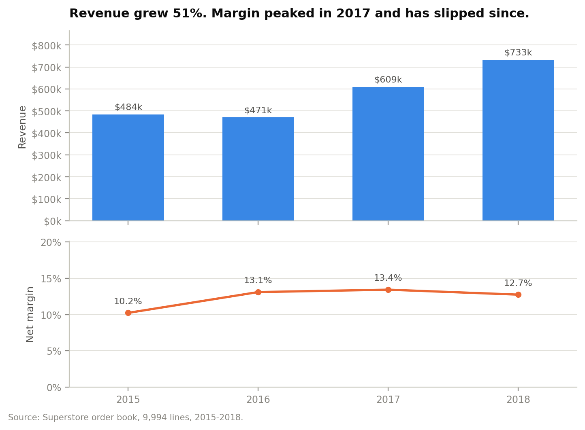
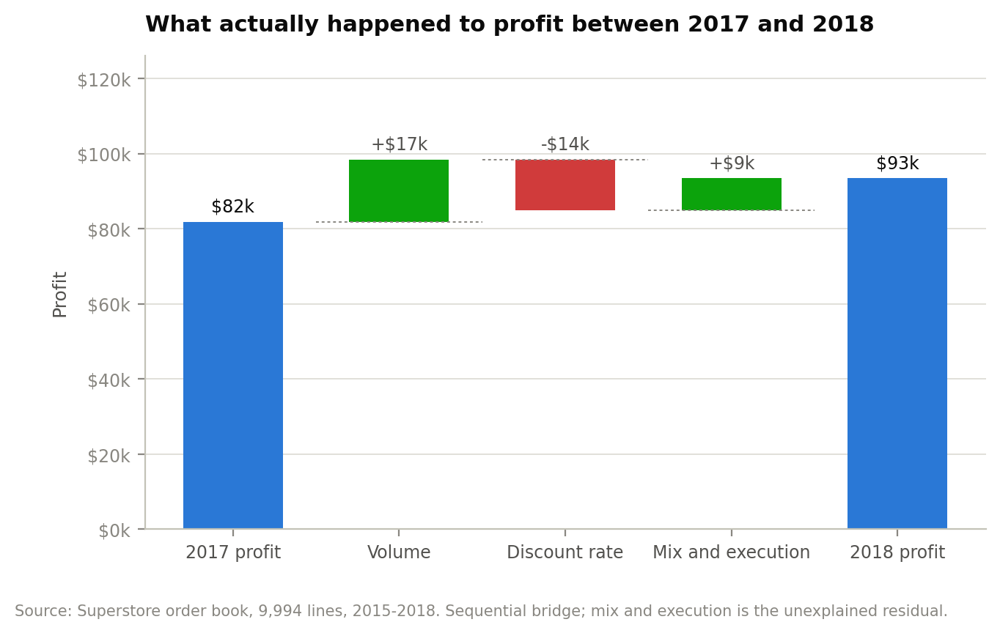
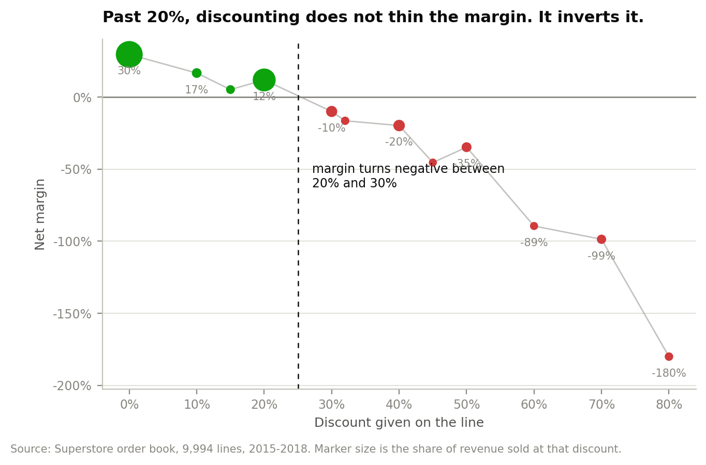
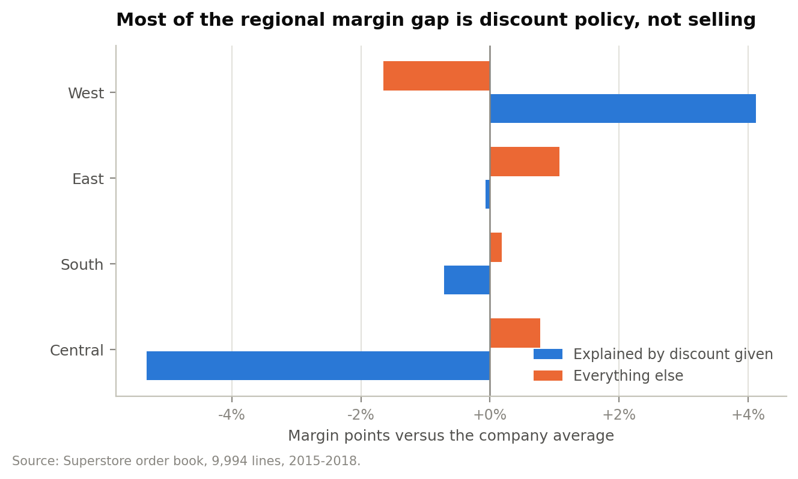

Pricing and commercial policy · Retail
A four-year order book — 9,994 lines, $2.30M of revenue — read for the question the growth numbers hide: the business is growing, so why is margin not?
Interactive dashboard Repository Executive summary Technical appendix
The published CSV is 10,800 rows. The first 9,994 are order lines; the rest are the workbook's People and Returns sheets written underneath, each introduced by a header sitting in the first two columns of an otherwise blank row. Read naively this looks like 806 rows of missing data and gets dropped.
Parsing the blocks out recovers 800 return records covering 296 orders — a table the standard read of this dataset discards, and one that turns out to decide whether the main recommendation is safe.
Revenue rose from $484,247 to $733,215, a 14.8% compound rate. Margin went 10.2% → 13.1% → 13.4% → 12.7%: it improved for two years and then gave back a third of the gain. The discount rate tracks it exactly.

The 2017–2018 bridge makes the mechanism explicit. Profit rose $11,644 — the net of a $16,650 volume gain and a $13,545 discount give-back. Higher discounting consumed 81% of what the extra revenue earned.

Lines sold at list carry a 29.5% margin. At 16–20% discount, 11.8%. At 21–30%, −10.0% — and 91.6% of the lines in that band lose money individually. Past 40%, every single line loses money. At 71% and above the margin is −180%: the business pays $1.80 for every dollar it books.

Central runs 4.6 margin points below the company. The instinct is to look at the sales team. Decomposing the gap into what the region's own discount mix explains and what it does not: 5.3 of those points are the discount Central is giving — 24.0% on average, against 10.9% in West — and its execution is 0.8 points better than the discounts would predict.

The obvious objection to a margin curve like this is that it understates the problem: if deeply discounted goods also come back more often, discounting costs more than the P&L shows. It does not. Lines on returned orders carry a 14.3% average discount against 15.7% on lines that were kept, and the rank correlation between discount and return is −0.019 (p = 0.052).
A null result, and a useful one: the margin curve can be taken at face value.
Recommendation
Cap the line-level discount at 20% and route anything deeper through a named approver. 1,393 lines — 13.9% of the book, $362,770 of revenue — sit above that cap and lose $135,376 between them. Repriced at 20%, the same list value earns $68,759: a $204,135 swing, a 71% increase on total company profit, from 14% of the order lines.
The usual counter is that some of that revenue walks away. Here that does not survive the arithmetic — the capped lines lose money as they stand, so revenue walking away is itself a gain. There is no walk-away rate at which the cap stops paying.
The cap counterfactual holds volume constant. It has to — there is no price test, no quote-to-order data and no lost-deal record anywhere in the file — which is why the recommendation is argued on the walk-away logic rather than on the $204,135. Four years of one retailer, ending 2018: the mechanism generalises, the 20% break-even does not.